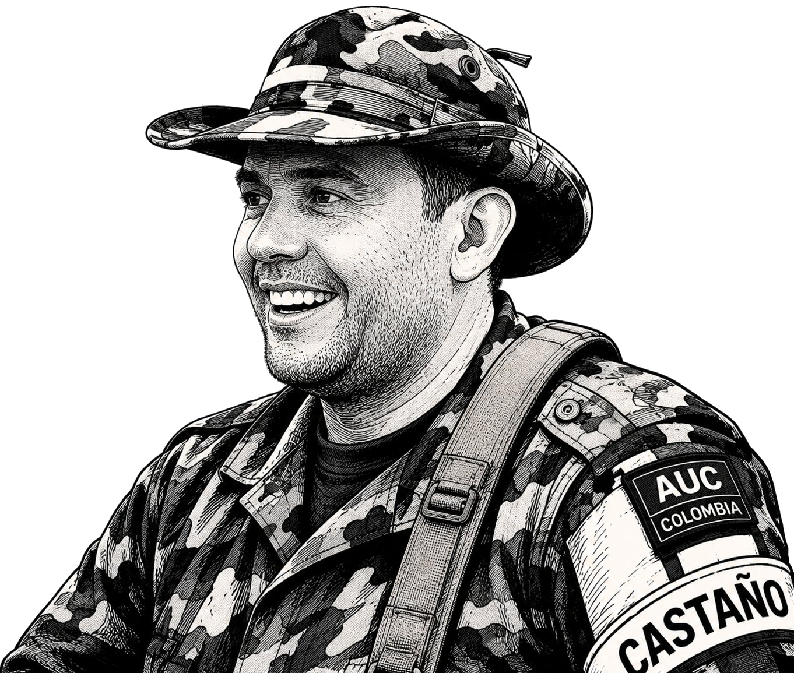

Carlos Castaño fue asesinado en abril de 2004 por orden de su propio hermano, Vicente Castaño, y otros jefes paramilitares de las AUC.Las razones principales fueron:Plan de entrega: Carlos negociaba en secreto su entrega a Estados Unidos (DEA) para salvar a su familia.Delación de socios: Iba a confesar rutas y nombres del narcotráfico dentro de la organización.Aislamiento político: Criticaba públicamente que las AUC se hubieran convertido en un cartel de la droga, ganándose la enemistad de jefes como Mancuso y Don Berna.Fue emboscado y ejecutado por alias "Monoleche" en una finca de Urabá. Su cuerpo fue ocultado en una fosa común hasta que el asesino confesó el crimen en 2006.
Carlos Castaño, el máximo comandante de las Autodefensas Unidas de Colombia (AUC), fue asesinado el 16 de abril de 2004 en una emboscada perpetrada por sus propios hombres en la vereda Guadual Medio, zona rural del municipio de Arboletes, Antioquia
La orden: El asesinato fue ordenado por la propia cúpula de las AUC, incluyendo a su hermano Vicente Castaño y otros jefes paramilitares como Salvatore Mancuso y alias "Monoleche"
Padres: -Rosa Eva Gil
-Jesús Antonio Castaño
Cónyuge: -Paula Restrepo (1983-1993)
-Kenia Gómez Toro (1997-2003)
Hijos: -Lina
-Carlos
-Rosa María
Familiares: -Fidel Castaño (hermano)
-Vicente Castaño (hermano)
